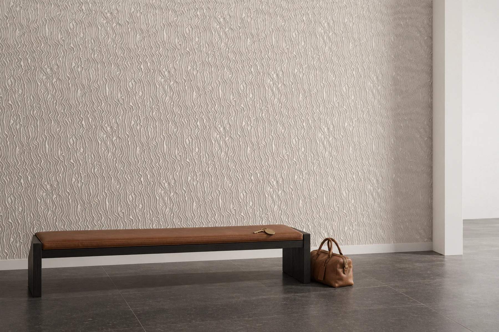

Glissando
Bu yüzey akan liflerden oluşur. Dikey paneller yarım boy şaşırtmalı dizilir; rölyef 3 mm’lik bir zeminden 14 mm’ye kadar yükselir ve ışık yandan geldikçe lifler belirginleşir.




- Ölçü
- 600 × 1200 mm
- Rölyef
- 14 mm (3 mm zemin)
- Kurgu
- Yarım boy şaşırtmalı diziliş
- Malzeme
- Lumina PMAG™ (polimer modifiye kompozit alçı)
- Yüzey
- Boyaya hazır
- Montaj
- Polimer yapıştırıcıyla
- Teslim
- Sözleşme ve peşinattan sonra 4 hafta (50 m²’ye kadar), Sapanca’da fabrika teslimi (EXW)
- Minimum sipariş
- 7,5 m²
Desen
Glissando, akan liflerden oluşan bir yüzeydir. Lifler panel boyunca hafif eğimli bir yönde ilerler ve yer yer sıklaşıp seyrelir; yüzey bir kumaşın ya da akan suyun çizgilerini andırır. Motifi olmayan, tamamen ritmi olan bir rölyeftir.
Rölyef 3 mm’lik bir zeminden 14 mm’ye kadar yükselir. Zemin sakin kalır, lifler bu zeminin üzerinde derinlik kazanır; yüzeyin büyük bölümü okunur bir düzlem olarak kalır.
Işıkta okunuşu
Sayfanın başındaki görüntüde ışığı bilgisayarda imleciniz, telefonda sayfayı kaydırmanız yönlendirir. Işık yandan, lifleri yalayacak bir açıyla geldiğinde çizgiler keskinleşir ve yüzey hareket ediyormuş gibi görünür. Işık dikleştikçe lifler yumuşar ve panel tek tonlu bir yüzeye yaklaşır.
Duvarda
Glissando 600 × 1200 mm ölçüsünde dikey bir panel olarak tasarlanmıştır. Paneller yarım boy, yani 600 mm şaşırtılarak dizilir; böylece dikey derzler birbirini izlemez ve lifler komşu paneldeki çizgilerle karşılaşır. Uzun ve yüksek duvarlar için kurulmuş bir kurgudur. Lifler dikey bir akışa sahip olduğundan tavan yüksekliği arttıkça yüzeyin etkisi de büyür; yerleşim çiziminde şaşırtma, duvarın kenarlarında nasıl biteceğiyle birlikte ele alınır.

Bir mekânda


Nerede kullanılır
Glissando uzun ve yüksek duvarlar için kurgulanmıştır; lifler dikey bir akışla ilerler ve yüksek bir duvar bu akışı tüm boyuyla gösterir. Sayfadaki konsept görüntüler tasarımı bir oturma odasında, bir klinikte, bir spada ve bir otel lobisinde gösterir. Motifi olmayan, yalnızca ritmi olan bir rölyef olduğu için mekânın arka planında sakin kalır; lifler ancak yalama ışıkta keskinleşir. Bir konutun salonunda böyle bir duvarın nasıl planlandığını villa duvar tasarımı rehberinde anlattık. Parçalar boyaya hazır teslim edilir; yüzey yerinde mekânın rengine boyanabilir.
Sık sorulan sorular
Glissando panellerinin ölçüsü nedir, nasıl dizilir?
Glissando 600 × 1200 mm ölçüsünde dikey bir rölyef duvar paneli olarak tasarlanmıştır; paneller yarım boy, yani 600 mm şaşırtılarak dizilir. Şaşırtmanın duvarın kenarlarında nasıl biteceği yerleşim çiziminde çözülür.
Glissando’nun rölyefi ne kadar derin?
Lifler 3 mm’lik bir zeminden 14 mm’ye kadar yükselir. Zemin sakin kalır, lifler bu zeminin üzerinde derinlik kazanır; yüzeyin büyük bölümü düz bir düzlem olarak okunur.
Glissando ne kadar sürede teslim edilir, duvara nasıl sabitlenir?
Teslim süresi, 50 m²’ye kadar olan siparişlerde sözleşme ve peşinattan sonra 4 haftadır; daha büyük siparişlerde tarih teklifte belirtilir. Teslim şekli Sapanca’da fabrika teslimidir (EXW). Parçalar Lumina PMAG™ — Polimer Modifiye Kompozit Alçı ile elde dökülür ve duvara polimer yapıştırıcıyla, metal dikme ve alçıpan duvarlarda ise ray sistemiyle sabitlenir. Bir kolonu saran, köşeyi dönen ya da kavisli bir duvarı izleyen parçalar ise aynı motifle Özel Üretim olarak dökülür; böyle bir duvar Özel Üretim takvimini izler. Minimum sipariş 7,5 m²’dir. Kalıp siparişinizle hazırlanır; dökümden önce ana modeli siz onaylarsınız; ikisi de 4 haftaya dahildir.
Bu tasarımın duvarınızda nasıl yerleşeceğini görmek için duvar ölçülerinizi iletin.
Kolon yüzleri ve dış köşeler yerleşim çiziminde çözülür. Bir kolonu saran, köşeyi dönen ya da kavisli bir duvarı izleyen parçalar, aynı motifle Özel Üretim olarak dökülür.